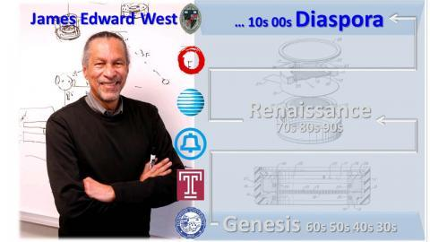

The History of the Black Scientific Diaspora from Bell Labs: A Conversation with James E. West
Recorded Thursday, 6/10/2021 at 4:30pm ET
Our previous discussion in May was with Professor James E. West h14 on his Black Scientific Genesis journey from the 1930s through the 1960s. This led him from growing up in Virginia, to working at Bell Labs, and becoming the co-inventor of modern day electret microphones. These experiences contributed to the Black Scientific Renaissance at Bell Laboratories from the 1970s through the 1990s as summarized in an April discussion.
The final talk of this Princeton series, with Professor James E. West and Professor William A. Massey, of the ORFE Department, covers the history of the Black Scientific Diaspora from Bell Labs. This follows the two most recent decades from the life of James West from the 2000s through the 2010s as an active researcher and inventor at Johns Hopkins University. We discuss the ongoing Princeton impact of his work on outreach programs and new projects that connect the innovation of his research to bringing new products to market.
FOCUS Presents: The Black Scientific Renaissance at Bell Labs
Recorded Thursday, 4/15/2021
On Thursday, April 15th, ODUS hosted a virtual panel discussion with Professor William A. Massey ’77 and Professor James E. West H14. The event was the latest in the FOCUS Speaker Series.
Dr. Massey is the Edwin S. Wilsey Professor in Princeton’s Department of Operations Research and Financial Engineering. After graduating from Princeton with a degree in Mathematics, he was admitted to Bell Labs’ prestigious Cooperative Research Fellowship Program, where he met and worked alongside Dr. West. West is now a professor of Electrical and Computer Engineering and Mechanical Engineering at Johns Hopkins University. He worked at Bell Laboratories for forty years – where he invented the foil electret microphone, which is used in nearly all modern recording electronics – before joining the Johns Hopkins faculty.